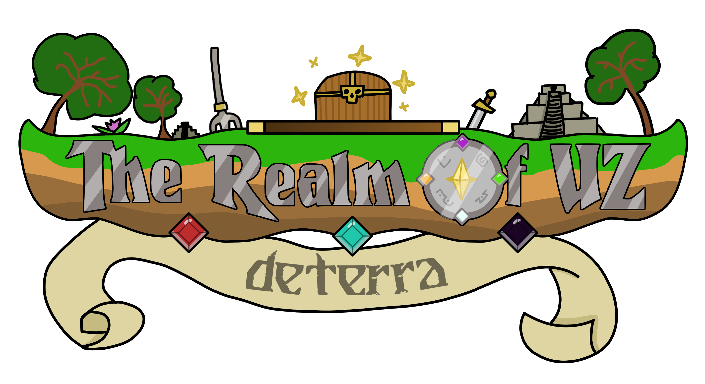

Realm of Uz
Join the offical discord server here!Intro
Free a wartorn land from the grip of a tyrannical deityin this forthcoming Minecraft MMORPG. Join the ranks of a
great rebellion and battle your way through uniquely designed
dungeons and several vast and fully explorable regions, improving
or gaining new equipment to face ever stronger foes. Delve deep
into the expansive storyline, discovering secrets about the creation
of the Realm, warding off sinister parasitic gods, and uncovering
the truth behind the three Founders and the enigmatic Overseer
looming above it all. And build unique playstyles by combining
items from a vast and diverse pool with an equally large selection
of fully accessible classes and specializations.
The winds of change blow, and so the time comes with them. Take the torch.
Find the Founders. Dethrone the Church.
The world is in your hands now.